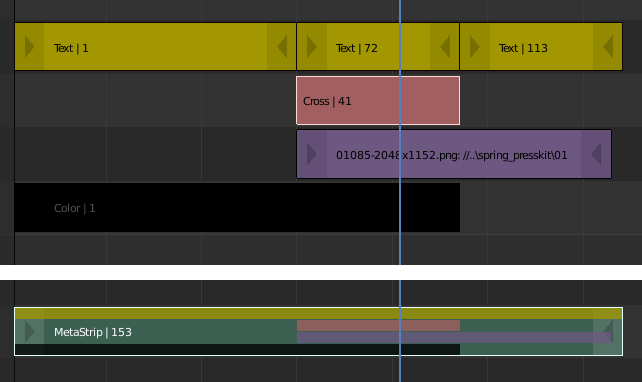

复合片段¶
复合片段是一个包含多个片段的片段，将它视作为是一个片段。它允许减少序列编辑器中使用的垂直空间。你可以像其他片段一样编辑它。
这是一种组织工具。例如，如果你使用大量复杂排列的片段，则可以使用复合片段将它们成组在一起。
- 生成复合片段 Ctrl-G
要创建复合片段，请选择你想要成组的所有片段，并按下 Ctrl-G 将其成组。复合片段将从第一个片段的开头跨越到最后一个片段的尾部，并将所有通道压缩成单个片段。
- 取消复合片段 Ctrl-Alt-G
分离(取消成组)复合片段，可将片段恢复到其相对位置和通道。如果你选择删除复合片段并希望保留里面所有片段，则可以使用此方法。

复合片段示例。¶
按下 Tab 便可编辑复合片段内的内容。它会将片段扩展到整个视图并隐藏其他任何片段。要退出复合片段，请再次按 Tab 。复合片段也可以嵌套，这会使编辑有点混乱。要退出复合片段的一个级别，请确保在按下 Tab 时没有选中一个复合片段。
Note
复合片段的默认混合模式是替换。在很多情况下，这会改变动画的结果，因此请务必检查结果并在必要时调整混合模式。
复合片段的一个方便用途是当你想要将相同的效果应用于多个片段时。例如：如果你有一个录制在不同文件中的视频，并且想添加一个特效条。将一组效果应用于一个复合片段比将其应用于每个单独的片段要方便很多。
See also
也可以使用 调整层 特效片段来执行上述类似的任务。